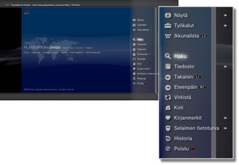

Verkko > Internet-selaimen perustoiminnot
Internet-selaimen perustoiminnot
Näytön katseleminen

(1) |
Sivun otsikko |
|---|---|
(2) |
Sivun osoite |
(3) |
SSL-kuvake |
(4) |
Varattu-kuvake |
(5) |
Selaimen tietoturvakuvake |
(6) |
Linkin osoite |
(7) |
Kohdistin |
Vieritystavat
| Suuntanäppäimet | Siirrä osoitin linkin kohdalle. |
|---|---|
 -näppäin + suuntanäppäin -näppäin + suuntanäppäin |
Vieritä sivu kerrallaan. |
| Oikea sauva | Vieritä mihin tahansa suuntaan. |
Valikon käyttäminen
Avaa valikko painamalla  -näppäintä, niin voit käyttää toimintoja ja muuttaa asetuksia. Valikon voi piilottaa tai tuoda näkyviin painamalla -näppäintä. Valikon vaihtoehdot vaihtelevat selaus- ja ikkunatilojen mukaan.
-näppäintä, niin voit käyttää toimintoja ja muuttaa asetuksia. Valikon voi piilottaa tai tuoda näkyviin painamalla -näppäintä. Valikon vaihtoehdot vaihtelevat selaus- ja ikkunatilojen mukaan.

Kirjoita osoite (URL)
Voit tuoda START-näppäintä painamalla näyttöön näppäimistön, jolla voit kirjoittaa osoitteen. Jos valitset  osoitteen kirjoittamisen jälkeen, näppäimistö suljetaan ja kirjoitettua osoitetta vastaava sivu avautuu.
osoitteen kirjoittamisen jälkeen, näppäimistö suljetaan ja kirjoitettua osoitetta vastaava sivu avautuu.
Tekstin kopioiminen
Voit kopioida tekstiä Internet-selaimessa näkyvältä sivulta.
1. |
Siirrä kohdistin kopioitavan tekstin kohdalle vasemmalla sauvalla ja paina sitten |
|---|---|
2. |
Pidä |
3. |
Vapauta |
4. |
Valitse näkyviin tulevasta valikosta [Kopioi]. |
Vihjeitä
- Voit liittää kopioimasi tekstin näyttönäppäimistön [Liitä]-näppäimen avulla.
- Jos valitset [Haku]-vaihtoehdon vaiheessa 4, voit tehdä Internet-haun käyttäen kopioimaasi tekstiä hakusanana.
Internet-sivun tulostaminen
Jos haluat käyttää tätä toimintoa, määritä ensin tulostin valitsemalla  (Asetukset) > [Tulostimen asetukset] > [Tulostimen valinta].
(Asetukset) > [Tulostimen asetukset] > [Tulostimen valinta].
1. |
Avaa tulostettava sivu ja paina |
|---|---|
2. |
Valitse [Tiedosto] > [Tulosta tämä näyttö]. |
3. |
Tarkista tulostusasetukset. |
4. |
Valitse [Tulosta]. |
Vihje
Käytettävissä olevat tulostimet vaihtelevat maittain ja alueittain. Lisätietoja saat alueesi SCE-verkkosivustolta.
Useiden ikkunoiden avaaminen
Voit avata useita ikkunoita samanaikaisesti. Paina  -näppäintä ja pidä sitä pohjassa, kun osoitin on linkin kohdalla, niin linkki avautuu uuteen ikkunaan.
-näppäintä ja pidä sitä pohjassa, kun osoitin on linkin kohdalla, niin linkki avautuu uuteen ikkunaan.